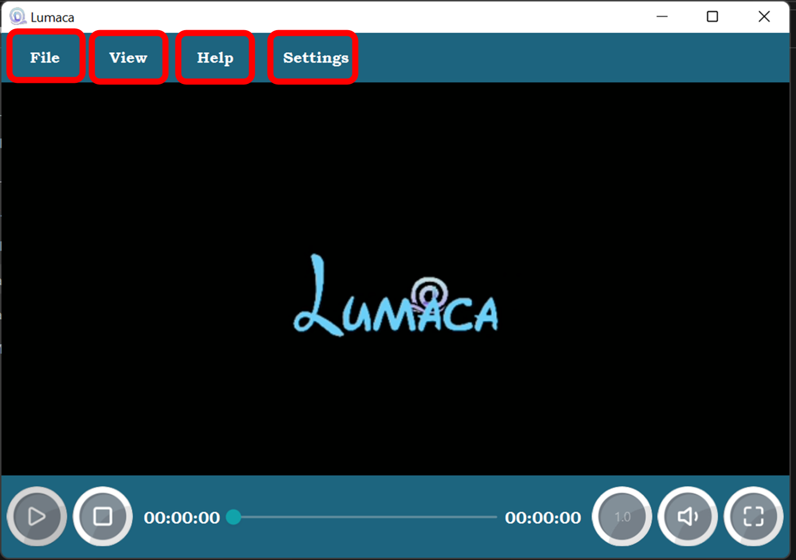
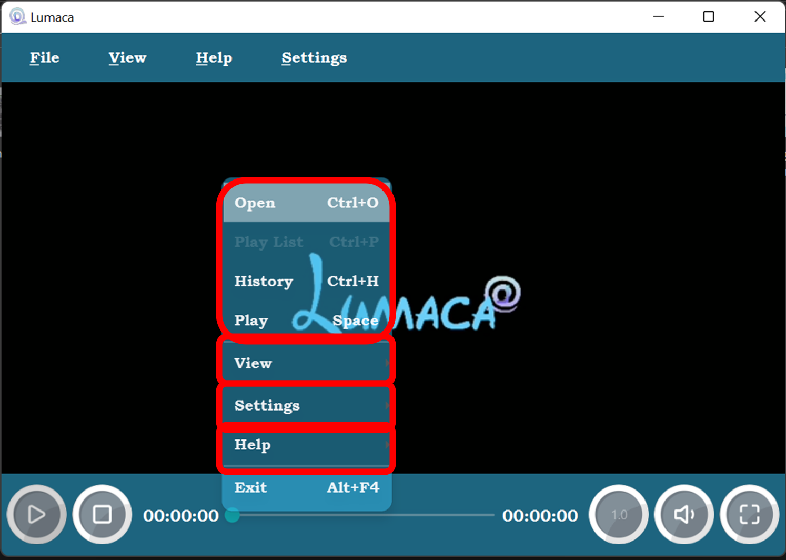

Main Window

01. Play Button
02. Stop Button
03. Play Progress Bar
04. Play Rate
05. Volume Control
06. Full Screen
07. Media Player
08. Menu Bar
How to Open a Media File
You can pressed the hot key Crtl + O to open file.

Or you can use the right-click menu or Open file from the top menu to open the media file:


In fact, you can also directly click the Play Button below to open the file when there is no media file to play.

By the way, you can drag the media file to the main view to open the file.

Menu Bar and Right-click menu
The menu is divided into three areas, namely File , View , Help , and Settings .
 In the submenu of File , there is an option of Play List. When you open the video and click on this menu, a playlist will be displayed.
After you open multiple media files, you can jump directly from here.
Of course, in addition to using the menu options, you can also directly click here:
Or use Crtl + P hotkey to open playlist.
After clicking the third submenu of File , the history of your playback will be displayed:
Each record is divided into:
01. When you last played this video
02. The content path to be played
03. The position where the last playback stopped
04. Types of media files
05. Play button and delete button: The play button allows you to continue playing from the place you watched last time, but if the last time is over, it will replay; and the delete button can delete a line of history .
Finally, there are two buttons at the top: Delete All and Close
Delete All : Delete all history records.
Close : Close the history page, the history will not be deleted。